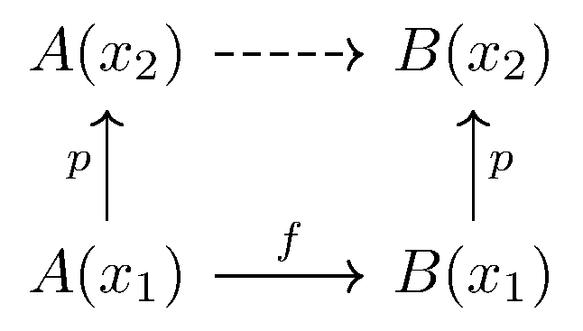
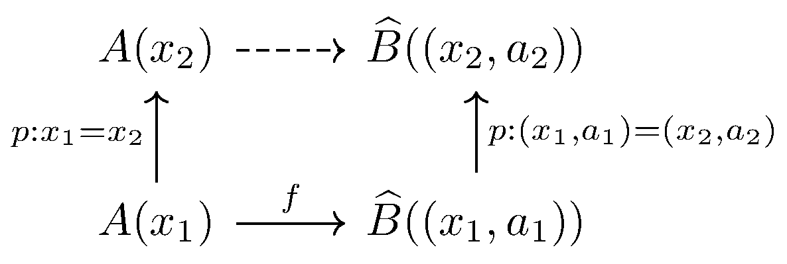

January 11th
Today I learned about transporting functions. Fix $X:\UU$ and parameterize $A,B:X\to\UU$ so that we have a "function'' type family $(A\to B)(x):\equiv A(x)\to B(x)$ by abusing notation. Then we can think about transporting $f:A(x_1)\to B(x_1)$ to some function in $A(x_2)\to B(x_2)$ along $p:x_1=x_2,$ which is classically denoted by\[\op{transport}^{A\to B}(p)(f):A(x_2)\to B(x_2).\]The point here is that there is a natural way to do this by taking $A(x_2)\to A(x_1)$ along $p^{-1},$ then taking $A(x_1)\to B(x_1)$ by $f,$ and then returning $B(x_1)\to B(x_2)$ along $p.$ Here's the commutative diagram.
In symbols, we can follow the diagram to generate\[\lambda a.\op{transport}^B(p)\left(f(\op{transport}^A(p^{-1})(a))\right):A(x_2)\to B(x_2).\]The hope is that this is equal to $\op{transport}^{A\to B}(p)(f).$
Certainly these are equal pointwise. For fixed $a,$ we can show that\[C(x_1,x_2,p)(f)(a)\equiv\op{transport}^{A\to B}(p)(f)(a)=\op{transport}^B(p)\left(f(\op{transport}^A(p^{-1})(a))\right).\]is inhabited by path induction on $p.$ Indeed, path induction means that it suffices to inhabit $C(x,x,\refl_x),$ but in this case $\op{transport}^\bullet(\refl_x)\equiv\op{id}_\bullet$ by definition, so we need to inhabit\[f(a)=f(a),\]for which $\op{refl}_{f(a)}$ of course works.
However, it is not clear how to go from pointwise equality to full function equality, and the short of is that we can't. We can exhibit\[(f=g)\to\prod_{a:A}f(a)=g(a)\]by path induction on $p:f=g,$ for then we only have to exhibit $f(a)=f(a),$ where $\op{refl}_{f(a)}$ of course works. (Here we are working with arbitrary dependent functions $f,g:\prod_{a:A}B(a),$ but it works in this context.) It is an axiom, the "function extensionality axiom,'' that this mapping is an equivalence, and this provides us a quasi-inverse\[\op{funext}:\left(\prod_{a:A}f(a)=g(a)\right)\to(f=g).\]Returning to the problem at hand, it follows that we can show the full equality\[\op{transport}^{A\to B}(p)(f)=\lambda a.\op{transport}^B(p)\left(f(\op{transport}^A(p^{-1})(a))\right)\]by using $\op{funext}$ on our witnesses for each $a:A(x_1).$ So things are good.
There is a corresponding equality for dependent functions in the more general case, but it is a bit annoying. I will write that it is\[\lambda a_2.\op{transport}^{\widehat B}\left(\op{pair}^=\left(p^{-1},\op{refl}_{p_*^{-1}(a_2)}\right)\right)\left(f\left(\op{transport}^A(p)(a_2)\right)\right)\]Here $\widehat B$ refers to the function type family taking $w:\sum_{(x:X)}A(x)$ to $B(\op{pr}_1w)(\op{pr}_2w).$ In particular, $B(x_\bullet)(a_\bullet)\equiv\widehat B((x_\bullet,a_\bullet)).$ The diagram is as follows; it's roughly the same. For brevity, we let $a_2$ be the input into the transported $f$ and $a_1:\equiv p^{-1}_*(a_2).$
All the garbage with $\op{pair}^=$ is really just trying to witness that $(x_1,a_1)=(x_2,a_2),$ and it's not terribly difficult (remembering how $\op{pair}^=$ works for $\sum$-types) to see that this type-checks.